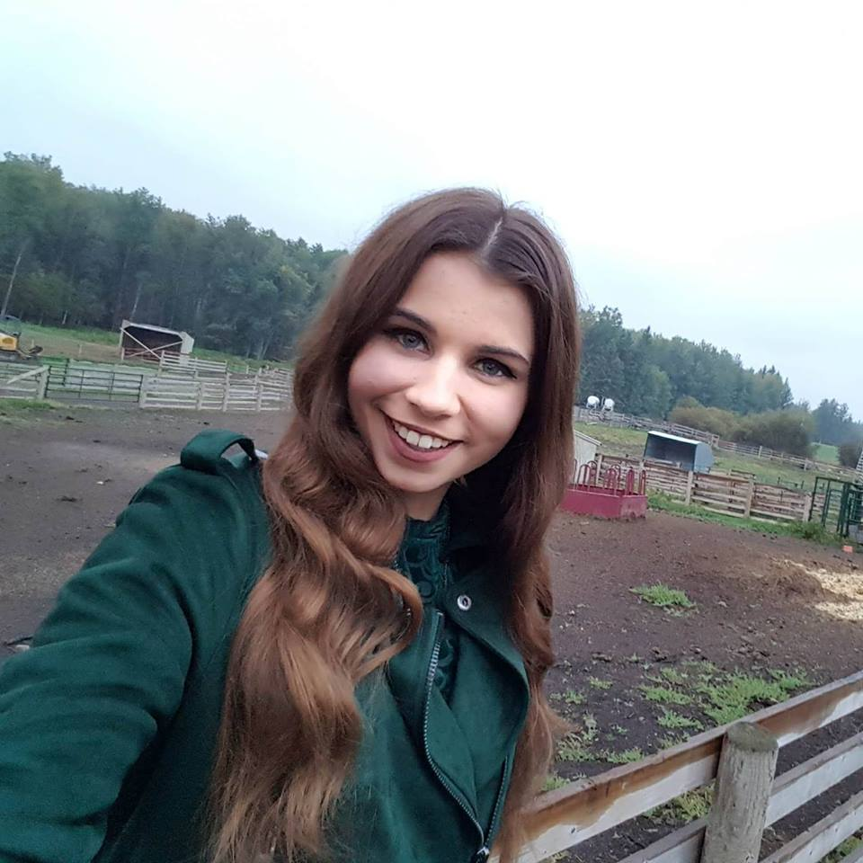

Brianna Boyko
Brianna Boyko is proud to be the lead singer in “Heartland” since 2017 but has been singing since childhood. She plays the fiddle and the ukulele and is excited to incorporate them both into the band. Brianna has performed from a variety of venues such as Leduc Black & Gold Rodeo, Angel Flight Fundraiser (with Dash Riprock), The Almanac, The Longest Hockey Game, Chilli Cookoff for Kids with Cancer, Alberta 55+ Senior Games, Tour of Alberta, Party in the Park, Barnyard Bash, Northside Vibe, and Ivan Daines Pick-Nic. She has performed on the ATB Homegrown Talent Stage at Big Valley Jamboree three years in a row. Brianna also sang in the Martin Kerr Choir at the Francis Winspear Centre for Music.
Brianna’s love of country music has given her the opportunity to have originals written for her by Sule Heitner and Elizabeth MacInnis. “Tell You What” written by Elizabeth MacInnis is Brianna’s first single, which hit iTunes, Spotify and many more July 2017.